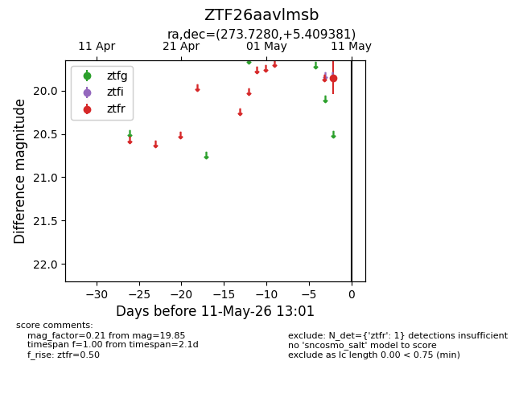
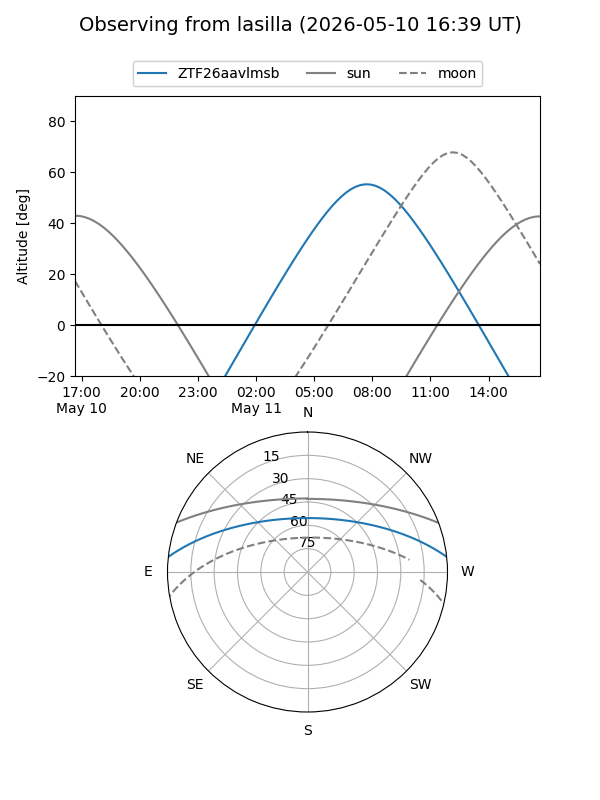
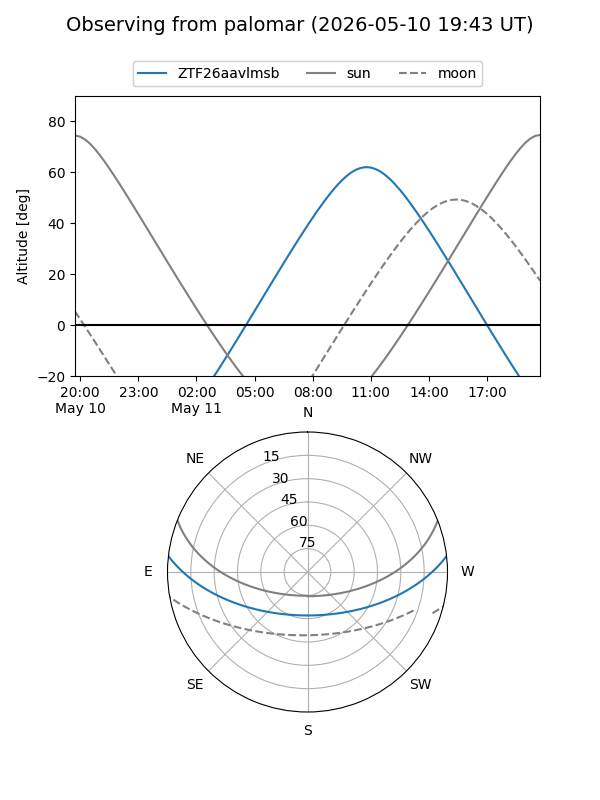

ZTF26aavlmsb
Target ZTF26aavlmsb at 2026-05-11 13:03
Aliases and brokers:
FINK: link
Lasair: link
ALeRCE: link
alt names
ZTF26aavlmsb (ztf,fink_ztf)
Coordinates:
equatorial (ra, dec) = 273.7280,+5.40938
equatorial (HMS+DMS) = 18:14:54.71,+05:24:33.77
galactic (l, b) = (33.6231,+10.57949)
Flags:
Photometry:
last ztfr=19.85
1 ztfr detections
Lightcurve

Visibility


Additional plots